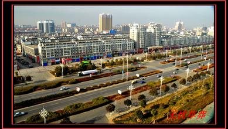

| 地名代码 | 42082199921410000000 | 类别名称 | 县级行政区 | ||||
| 标准地名 | 汉字 | 曹武镇 | |||||
| 民族文字 | 语种 | 汉语 | |||||
| 罗马字母拼写 |
caowuzhen | ||||||
| 使用时间 | 现今地名 |
||||||
| 简称 | 别名 | 曾用名 | |||||
| 地理位置 | 东经(自) | 东经(至) | |||||
| 北纬(自) | 北纬(至) | ||||||
| 原图名称 | 曹武镇 | 比例尺 | 1:5万 | 图号(年版) | |||
| 所在(跨)行政区域 | 曹武镇 | ||||||
| 地名的来历，含义和历史沿革 |
曹武曾是曹操屯兵练武之地，历史悠久，人杰地灵。抗日战争时期，李先念、陈少敏等先辈曾在这块赤色的土地上留下过光辉的足迹，新四军五师“七七报社”、养马畈旧址在曹武镇境内。1992年12月时任中共中央总书记江泽民同志亲临曹武镇，并视察了曹武镇跃进当生态农业基地 曹武区位明显，交通便捷。东距省城武汉126公里，西距宜昌三峡200公里，长荆铁路穿境而过，兰杭高速、随岳高速交叉运行，距随岳高速入口处仅5公里。 |
||||||
| 地理实体概况 |
京山县曹武镇水管站改制完成。13名职工全部办了养老保险，买断了身份，“公家人”变成了“社会人”。身为站长的孟凡荣，在镇政府帮助下成立镇水利服务中心，办理了工商执照和税务登记证，成为一家集体性质企业的经理，并聘请3个人帮他“打工”。在承包了政府的农田水利设计、防汛抗旱技术指导和人畜引水工程设计等公益服务之外，曾凡荣的“服务中心”还有大量的精力招揽其他服务性和经营性项目，企业实际的年收入有9万块钱左右 湖北省乡镇综合配套改革涉及到农村工作的各个方面，其核心内容是对乡镇机构和人员进行整合分流，转变乡镇 政府的职能。2006年以来，曹武镇政府对推进乡镇综合配套改革多次进行部署，先后出台了一系列政策性文件。首先是精简乡镇党政机关机构和人员。从2006年起，曹武镇乡镇机构编制由省里统一控制、审批，乡镇机构编制只减少不增加。其次是推进乡镇事业单位转制。改革中最困难的是事业单位，其中难度最大的又是七站八所。 |
||||||
| 资料来源 | 《湖北省京山县地名志》1981年版273页、京山镇政区大典、实地调查、勘测 | ||||||
| 多媒体信息 |
曹武镇.jpg  |
||||||
| 备注 | |||||||
| 制表人 | 审核人 | 制表时间 | 2014年12月03日 |
||||